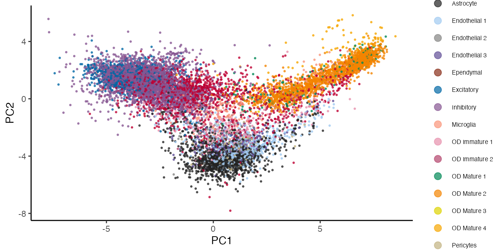
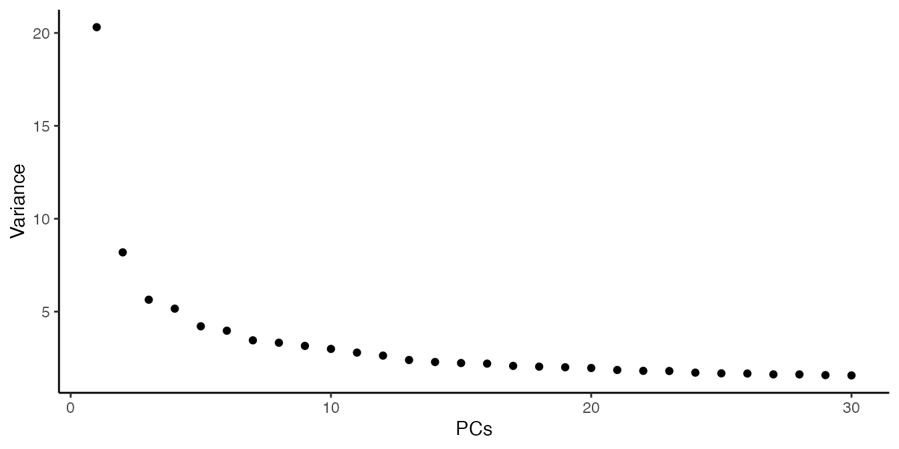
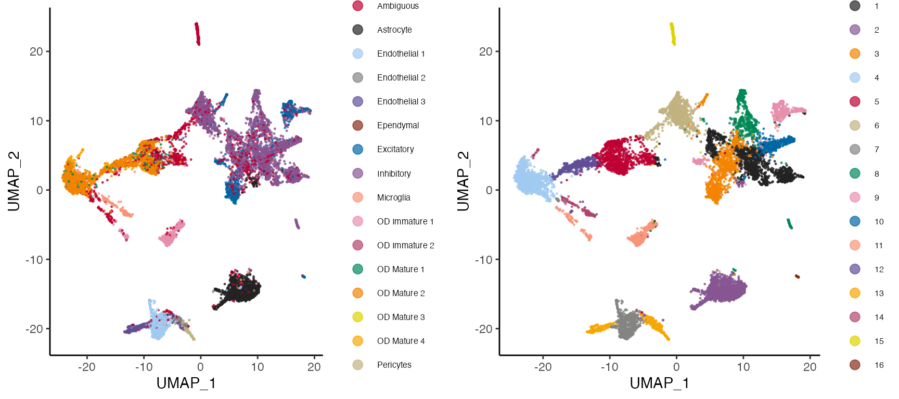

This article demonstrates functions for visualisation with a mouse hypothalamus MERFISH dataset. The dataset comprises 11,162 cells and 161 genes in 3 spatial dimensions. Cell type annotation along with other metadata is provided.
library(Banksy)
data(hypothalamus)
# Initialize BanksyObject
expr <- hypothalamus$expression
locs <- hypothalamus$locations
meta <- hypothalamus$metadata
total_count <- colSums(expr)
meta <- cbind(meta, total_count = total_count)
bank <- BanksyObject(own.expr = expr,
cell.locs = locs,
meta.data = meta)
# Filter BanksyObject based on total count
bank <- SubsetBanksy(bank, metadata = total_count > quantile(total_count, 0.05))
bank
#> Object of class BanksyObject
#> Assay with 10603 cells 161 features
#> Spatial dimensions: sdimx sdimy sdimz
#> Metadata names: cell_ID Cell_name Cell_class Neuron_cluster_ID Animal_ID Animal_sex Behavior total_count
#> Dimension reductions:Almost all plotting functions in Banksy return ggplot objects. They can thus be further modified with the grammar of ggplot.
Spatial plots
Banksy implements plotSpatial for visualising cells in spatial dimensions. For 3 dimensional datasets, it is assumed that the z-plane is discretized. Spatial plots will be wrapped by z-plane.
plotSpatial(bank)
Cells can be colored by groups. Any column in the metadata and any feature (gene) can be used as a grouping variable.
plotSpatial(bank, by = 'Cell_class', type = 'discrete')Plots can be wrapped with wrap=TRUE:
# Wrap to visualise each group in the grouping factor
plotSpatial(bank, by = 'Cell_class', type = 'discrete', wrap = TRUE)
Process the data:
bank <- NormalizeBanksy(bank)
bank <- ComputeBanksy(bank, k_geom = 15, spatialMode = 'kNN_r')
#> Computing neighbors...
#> Computing neighbor matrix...
#> Done
bank <- ScaleBanksy(bank)Visualise scaled Mbp expression, a marker for myelinating oligodendrocytes:
plotSpatial(bank, by = 'Mbp', type = 'continuous',
col.lowpoint = -1, col.highpoint = 1)Multiple features can be plotted simultaneously with plotSpatialFeatures:
features <- c('Mbp', 'Cxcl14', 'Fn1')
type <- rep('continuous', 3)
plotSpatialFeatures(bank, by = features, type = type,
col.lowpoint = -1, col.highpoint = 1,
main = features, main.size = 10, nrow = 3)
Dimensionality reduction
Banksy provides functions for running and visualising principal component analysis (PCA) and uniform manifold approximation projection (UMAP) for dimensionality reduction.
We run PCA and UMAP, and visualise the results. A scree plot can be used to visualise the proportion of variance explained by each PC, and determine how many PCs are used in downstream analyses.
bank <- RunPCA(bank, lambda = 0.2, npcs = 30)
#> Running PCA for lambda=0.2
plotReduction(bank, reduction = 'pca_0.2', by = 'Cell_class', type = 'discrete')
plotScree(bank, lambda = 0.2)
Next, we run UMAP and visualise the projection:
bank <- RunUMAP(bank, lambda = 0.2, npcs = 20)
#> Computing UMAP with 20 PCs
#> Running UMAP for lambda=0.2
p1 <- plotReduction(bank, reduction = 'umap_0.2', by = 'Cell_class',
type = 'discrete', pt.size = 0.25)Run BANKSY with Leiden clustering, and compare the clustering output with the cell class annotation:
bank <- ClusterBanksy(bank, lambda = 0.2, pca = TRUE, npcs = 20,
method = 'leiden', k.neighbors = 50, resolution = 1)
#> Iteration 1 out of 1
p2 <- plotReduction(bank, reduction = 'umap_0.2', by = clust.names(bank),
type = 'discrete', pt.size = 0.25)
gridExtra::grid.arrange(
p1, p2, ncol = 2
)
Heatmaps
We implement heatmap visualisation with the ComplexHeatmap package. The assay argument takes one of:
-
own.expr: visualise the cell’s own expression -
nbr.expr: visualises the neighborhood expression -
banksy: visualises combined own and neighbor expression weighted bylambda
We can introduce multiple cell annotations by setting annotate=TRUE and specifying annotate.by.
Because expression matrices can be large, one can also specify the maximum number of columns that should be plotted with max.cols. This subsamples the matrix to speed up plotting.
set.seed(1000)
plotHeatmap(bank, assay = 'banksy', lambda = 0.2,
annotate = TRUE,
annotate.by = c('Cell_class', clust.names(bank)),
order.by = clust.names(bank),
features = sample(rownames(own.expr(bank)), 100),
max.cols = 200)
#> Sampling 200
#> Keeping 1.89% of cells
Session information
sessionInfo()
#> R version 4.1.2 (2021-11-01)
#> Platform: x86_64-w64-mingw32/x64 (64-bit)
#> Running under: Windows 10 x64 (build 19043)
#>
#> Matrix products: default
#>
#> locale:
#> [1] LC_COLLATE=English_Singapore.1252 LC_CTYPE=English_Singapore.1252
#> [3] LC_MONETARY=English_Singapore.1252 LC_NUMERIC=C
#> [5] LC_TIME=English_Singapore.1252
#>
#> attached base packages:
#> [1] stats graphics grDevices utils datasets methods base
#>
#> other attached packages:
#> [1] Banksy_0.1.3
#>
#> loaded via a namespace (and not attached):
#> [1] bitops_1.0-7 matrixStats_0.61.0
#> [3] fs_1.5.2 RcppAnnoy_0.0.19
#> [5] doParallel_1.0.17 RColorBrewer_1.1-3
#> [7] rprojroot_2.0.2 GenomeInfoDb_1.30.1
#> [9] tools_4.1.2 bslib_0.3.1
#> [11] irlba_2.3.5 utf8_1.2.2
#> [13] R6_2.5.1 uwot_0.1.11
#> [15] DBI_1.1.2 BiocGenerics_0.40.0
#> [17] colorspace_2.0-2 GetoptLong_1.0.5
#> [19] gridExtra_2.3 tidyselect_1.1.2
#> [21] compiler_4.1.2 textshaping_0.3.6
#> [23] cli_3.1.0 Biobase_2.54.0
#> [25] desc_1.4.1 DelayedArray_0.20.0
#> [27] labeling_0.4.2 sass_0.4.0
#> [29] scales_1.2.0 pkgdown_2.0.2
#> [31] systemfonts_1.0.4 stringr_1.4.0
#> [33] digest_0.6.29 dbscan_1.1-10
#> [35] rmarkdown_2.13 XVector_0.34.0
#> [37] dichromat_2.0-0.1 pkgconfig_2.0.3
#> [39] htmltools_0.5.2 MatrixGenerics_1.6.0
#> [41] highr_0.9 maps_3.4.0
#> [43] fastmap_1.1.0 rlang_1.0.2
#> [45] GlobalOptions_0.1.2 pals_1.7
#> [47] rstudioapi_0.13 farver_2.1.0
#> [49] shape_1.4.6 jquerylib_0.1.4
#> [51] generics_0.1.2 jsonlite_1.8.0
#> [53] mclust_5.4.9 dplyr_1.0.7
#> [55] RCurl_1.98-1.6 magrittr_2.0.1
#> [57] GenomeInfoDbData_1.2.7 Matrix_1.3-4
#> [59] Rcpp_1.0.7 munsell_0.5.0
#> [61] S4Vectors_0.32.3 fansi_0.5.0
#> [63] lifecycle_1.0.1 leidenAlg_1.0.2
#> [65] stringi_1.7.6 yaml_2.2.1
#> [67] ggalluvial_0.12.3 SummarizedExperiment_1.24.0
#> [69] zlibbioc_1.40.0 plyr_1.8.6
#> [71] grid_4.1.2 parallel_4.1.2
#> [73] crayon_1.5.1 lattice_0.20-45
#> [75] sccore_1.0.1 mapproj_1.2.8
#> [77] circlize_0.4.15 magick_2.7.3
#> [79] knitr_1.37 ComplexHeatmap_2.10.0
#> [81] pillar_1.7.0 igraph_1.2.11
#> [83] GenomicRanges_1.46.1 rjson_0.2.21
#> [85] codetools_0.2-18 stats4_4.1.2
#> [87] glue_1.6.0 evaluate_0.15
#> [89] data.table_1.14.2 png_0.1-7
#> [91] vctrs_0.3.8 foreach_1.5.2
#> [93] grr_0.9.5 gtable_0.3.0
#> [95] purrr_0.3.4 assertthat_0.2.1
#> [97] clue_0.3-60 cachem_1.0.6
#> [99] ggplot2_3.3.6 xfun_0.29
#> [101] RSpectra_0.16-1 ragg_1.2.2
#> [103] tibble_3.1.6 RcppHungarian_0.2
#> [105] iterators_1.0.14 Matrix.utils_0.9.8
#> [107] memoise_2.0.1 IRanges_2.28.0
#> [109] cluster_2.1.2 ellipsis_0.3.2